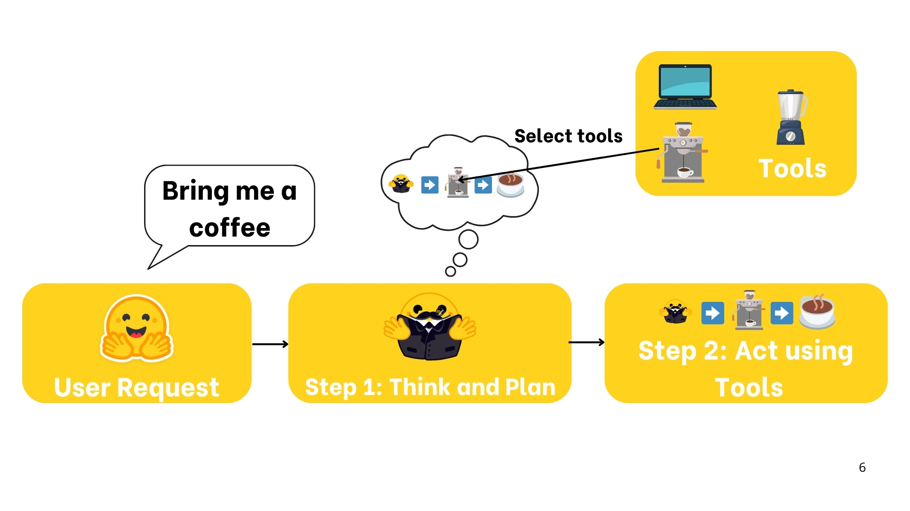

Generación de contenido educativo basado en LLM para cursos universitarios.
1 Introducción
Los Modelos de Lenguaje de Gran Escala (LLM, por sus siglas en inglés) han supuesto una revolución tanto para la industria como para la sociedad, en gran parte debido a su creciente accesibilidad. Un claro ejemplo de este fenómeno es el impacto de OpenAI con ChatGPT, que popularizó el uso de estos modelos a pesar de que su motor subyacente, GPT, ya existía desde hace tiempo. Sin embargo, en sus inicios, el entrenamiento de estos modelos era una tarea extremadamente costosa y limitada por los recursos computacionales disponibles, puesto que - de acuerdo con lo dicho por Oyola (2024) -, el hardware actúa como una “columna vertebral” sobre la cual se sostienen los cimientos necesarios para la implementación de un modelo complejo con la capacidad, velocidad y eficiencia esperadas a causa de su creciente demanda por parte de los usuarios.
El avance en hardware especializado, en particular el desarrollo de tarjetas gráficas (GPU) y unidades de procesamiento tensorial (TPU) de nueva generación, ha permitido acelerar significativamente el entrenamiento de los modelos, de acuerdo con lo dicho por Jiménez (2025). Esto ha facilitado la creación de versiones cada vez más avanzadas y accesibles, lo que ha impulsado la adopción masiva de los LLM en diversas aplicaciones, desde asistentes virtuales hasta generación de contenido y automatización de tareas complejas.
A medida que la tecnología sigue evolucionando, la combinación de mayor poder computacional y mejores algoritmos de entrenamiento promete expandir aún más las capacidades de estos modelos, consolidando su papel en la transformación digital de múltiples sectores y extendiendo sus implicaciones en muchos más aspectos de la vida académica e industrial (entre otras), como lo sugiere la Figura 1.
Figura 1.
Imagen ilustrativa de los LLM. Tomado de https://www.linkedin.com/pulse/so-much-talk-large-language-models-aibut-what-else-does-martin-hughes/
Los aspectos anteriormente mencionados pueden llegar a generar preocupación debido a la capacidad de estos modelos, generando interrogantes de manera especial en el mundo laboral y en el contexto educativo. Por una parte, quienes participan en la industria se preocupan porque sus puestos sean reemplazados por un modelo de Inteligencia Artificial, lo cual agravaría la crisis de desempleo que se vive en muchas ciudades. Por otra parte, docentes y estudiantes se preguntan hasta qué punto el desarrollo de un contenido académico puede ser apoyado por Inteligencia Artificial y seguirse considerando una elaboración propia, además de cumplir con los objetivos de aprendizaje y estándares de calidad establecidos para cada curso.
El presente trabajo pretende abordar la situación planteada en el segundo caso, es decir, la utilización de Inteligencia Artificial en el sistema educativo y sus implicaciones. Para este fin, se desarrollará un agente inteligente con el cual se espera mostrar que los LLM deben ser vistos e integrados como un apoyo en las diferentes actividades del sistema educativo, no como un enemigo de la academia y el aprendizaje.
2 Planteamiento del proyecto
Teniendo en cuenta lo dicho anteriormente, el presente proyecto abordará el uso de Modelos de Lenguaje a Gran Escala en la educación, sin embargo, este contexto es demasiado amplio para ser tratado en su totalidad, por lo que se hace necesario definir un alcance que permita construir un producto realista y hallar conclusiones razonables.
2.1 Alcance del proyecto
El presente trabajo estará definido en términos del estudio de la utilización de la Inteligencia Artificial en el desarrollo de cursos a nivel universitario, más específicamente, la manera en que su uso puede beneficiar a los docentes en la creación de materiales didácticos pertinentes y con la calidad esperada, a fin de que ellos puedan dedicarse más exclusivamente a acompañar el proceso de aprendizaje de sus estudiantes desde un punto de vista integral.
2.2 Objetivo general
Desarrollar un agente que, integrando un LLM, permita generar contenido basado en el programa resumen de un curso. Se espera que pueda obtener notas detalladas para cada tema, ejercicios con soluciones, preguntas, objetivos de aprendizaje y lecturas sugeridas.
2.3 Objetivos específicos
En complemento al objetivo general establecido anteriormente, se plantean los siguientes objetivos específicos, que marcarán la hoja de ruta para desarrollar todas las actividades concernientes al desarrollo del presente ejercicio:
Generar material de aprendizaje basado en el programa del curso.
Evaluar la calidad de material proporcionado por el agente.
3 Arquitectura de los transformers
La aparición de los LLM (Large Language Models) se atribuye en gran medida al desarrollo de la arquitectura de Transformers, como puede contrastarse con la información proporcionada por Novita AI (2024), la cual introduce el mecanismo de atención (self-attention). Este mecanismo permite que los modelos procesen de manera integral el prompt, es decir, el conjunto de instrucciones que se suministran al modelo Facchin (n.d.), enriqueciendo su comprensión contextual y, por ende, mejorando la calidad de las respuestas que generan. La estructura básica de un transformer se ilustra en la Figura 2:
Figura 2.
Arquitectura de un transformer con un encoder y un decoder.
 Tomado de https://huggingface.co/learn/agents-course/unit1/what-are-llms
Tomado de https://huggingface.co/learn/agents-course/unit1/what-are-llms
La arquitectura anteriormente presentada permite observar la manera en que la red puede “prestar atención” a diferentes partes de la secuencia de entrada identificando las partes más relevantes. Estos resultados no se alcanzaban con arquitecturas más tradicionales como las LSTMs o las RNNs. Lo anterior también permite introducir el concepto de los encoders y los decoders, de acuerdo con la información consultada en Hugging Face (n.d.a).
Encoder: Consiste en varias capas de atención que toman la secuencia de entrada y la transforman en una representación interna. Es útil para tareas de clasificación o búsqueda de información en textos. Un ejemplo de arquitectura de este tipo es el modelo BERT.
Decoder: Se centra en la generación de texto de forma autoregresiva, tomando como referencia lo que se ha generado hasta el momento para predecir el siguiente token. Gracias a su mecanismo de atención, puede “recordar” el contexto anterior y mantener coherencia en el flujo de la información. Un ejemplo de arquitectura de este tipo son los modelos GPT.
Encoder-Decoder: Combina un encoder que procesa la secuencia de entrada y un decoder que genera la salida, permitiendo una transformación de la información de forma completa. Es especialmente útil en tareas de traducción, resumen o cualquier proceso donde la entrada y la salida puedan diferir sustancialmente (por ejemplo, un texto original y su traducción). Un ejemplo de esta arquitectura es el modelo T5.
4 Agentes
Para comenzar, es necesario definir un agente de la siguiente manera:
“Un sistema que utiliza un modelo de inteligencia artificial para interactuar con su entorno con el fin de cumplir un objetivo definido por el usuario. Combina razonamiento, planificación y la ejecución de acciones (a menudo mediante herramientas externas) para llevar a cabo sus tareas.” Hugging Face (n.d.b).
La Figura 3 representa una analogía de la definición anteriormente dada, como puede observarse.
Figura 3.
Analogía del funcionamiento de un agente.  Tomado de https://huggingface.co/learn/agents-course/unit1/what-are-agents
De acuerdo con lo anterior, los agentes consisten de manera principal en los siguientes componentes:
Modelo de inteligencia artificial: hace las veces de cerebro del agente, permite decidir que decisión tomar.
El cuerpo: permite agregar funcionalidades al agente para mejorar su capacidad de responder y tomar acciones, como por ejemplo la capacidad de ChatGPT de generar imágenes.
5 Desarrollo del Agente
Una vez definido el fundamento teórico, se continúa con las tareas relacionadas al desarrollo del agente, de acuerdo con los objetivos específicos anteriormente establecidos; en primer lugar se definirán las herramientas a utilizar y posteriormente se darán a conocer los resultados obtenidos.
5.1 API Gemini
Se utilizará la API de Gemini como modelo LLM del agente, lo anterior debido a que se hicieron prueba con otros modelos pero requerían capacidades computacionales más altas de las que se tenían acceso, por lo que la API de Gemini terminó siendo la mejor alternativa para generar el contenido académico.
5.2 Funciones del agente
Procesamiento del formato de archivo: Se crearon funciones que mejoran la capacidad del agente para entender el documento segmentando la información relevante que irá en el prompt.
Documento PDF: Se crea la función que permite obtener el material como contenido PDF.
Flashcards: Se crearon flashcards que permiten sintetizar las preguntas y hacer más natural la forma de estudio a partir del material generado.
5.3 Prompt utilizado
El prompt, como se mencionó anteriormente, corresponde al mensaje con el que se dan las instrucciones al agente. Teniendo esto en cuenta, es fácil notar su especial importancia a la hora de mejorar las capacidades de entendimiento del agente que recibe las instrucciones, lo cual dio origen a las técnicas de prompt engineering que, según información proporcionada por IBM (n.d.), permiten obtener resultados con mayor calidad en términos del contexto del problema analizado o el LLM que alimenta las respuestas del agente. Un ejemplo de la incidencia de los prompts en las respuestas recibidas puede observarse en las Figuras 4 y 5.
Figura 4.
Prompt agresivo con el usuario.
 Tomado de https://huggingface.co/learn/agents-course/unit1/what-are-llms
Tomado de https://huggingface.co/learn/agents-course/unit1/what-are-llms
Figura 5.
Prompt que hace enfásis en el respeto hacia el usuario.
 Tomado de https://huggingface.co/learn/agents-course/unit1/what-are-llms
Tomado de https://huggingface.co/learn/agents-course/unit1/what-are-llms
Finalmente, después de hacer una serie de pruebas y analizar los resultados obtenidos con cada uno de los prompts proporcionados, se definió la siguiente estructura para solicitar la generación de materiales educativos al agente, por medio de la cual se obtuvieron respuestas satisfactorias, que serán analizadas con más detalle en una sección posterior.
5.3.1 Estructura del prompt.
Eres un asistente educativo experto en la creación de materiales didácticos de alta calidad para cursos universitarios. Tu tarea es generar contenido claro, preciso y bien estructurado, con rigor académico y ejemplos pertinentes, adaptado al nivel de profundidad que se solicita. Responde siempre de forma organizada y autoexplicativa, para que sea fácil de entender y aplicar.
Información del curso: - Título: course_title - Código: course_code - Descripción: course_description
Genera notas de clase completas y detalladas que cubran el tema a profundidad. Emplea rigor académico, definiciones precisas y ejemplos concretos para cada concepto. Asegúrate de explicar la relevancia práctica y posibles aplicaciones. Organiza la información de manera clara y estructurada, de modo que sea fácilmente entendible.
Genera notas de clase detalladas para el tema: topic_title. Incluye los siguientes subtemas: subtopics. Las notas deben incluir definiciones, explicaciones claras, ejemplos y casos de aplicación.
6 Material Generado
Posteriormente, a través de la utilización del contenido generado por el agente, se obtiene el material didáctico y se lleva al formato de los siguientes archivos con sus correspondientes características:
PDF: en primer lugar se genera un documento en formato PDF con todo el material obtenido por el agente de manera organizada, separando la teoría, los ejercicios, los consejos, el material extra como referencias y similares, etc. En este sentido, se puede ver que el resultado es un documento extenso, motivo por el cual se introduce el segundo material entregable: para mejorar el entendimiento de la respuesta dada por parte de los docentes y sus estudiantes.
Flashcards: utilizando el material correspondiente de las preguntas de evaluación, se anexan como material complementario una serie de flash cards que permiten ver de manera más clara las preguntas formuladas y su respectiva respuesta, como se ilustra en el ejemplo proporcionado por la Figura 6.
Figura 6.
Ejemplo de Flashcard generada como material pedagógico complementario. Elaboración propia.
7 Métricas del modelo
A continuación se describe de manera detallada el desarrollo e interpretación de las métricas para evaluar la pertinencia y calidad de los materiales educativos generados por el agente, de manera que este último termina por convertirse también en un evaluador de su propio trabajo.
7.1 Evaluación por tema
Cada tema tiene puntajes individuales para su sección. Se evalúan cuatro aspectos clave.
Relevancia: Medida a través de la cobertura de subtemas en el contenido generado, como puede verse en la Ecuación 1.
\[ \text{Cobertura Subtemas} = \frac{\sum_{i=1}^{N} \mathbb{1}(\text{Subtema}_i \in \text{Contenido})}{N} \tag{1} \]donde \(N\) es el número total de subtemas y la función indicadora \(\mathbb{1}\) devuelve 1 si el subtema está presente y 0 si no.
Consistencia: Evaluada como se observa en la Ecuación 2: mediante la similitud de coseno entre las diferentes secciones del tema.
\[ \text{Consistencia} = \frac{\sum_{i=1}^{N} \sum_{j=i+1}^{N} \text{SimilitudCoseno}(\text{Texto}_i, \text{Texto}_j)}{\frac{N (N-1)}{2}} \tag{2} \]donde \(N\) es el número total de textos generados y se calcula la similitud de coseno entre cada par de textos.
Legibilidad: Basada en la longitud promedio de las oraciones, donde textos más cortos y claros obtienen una mejor puntuación asignada por la Ecuación 3. \[ \text{Legibilidad} = \max \left(0, \min \left(1, \frac{30 - \frac{\text{Total Palabras}}{\text{Total Oraciones}}}{15} \right) \right) \tag{3} \]
Como valores extremos, si las oraciones tienen menos de 15 palabras, la legibilidad es 1.0; si tienen más de 30, es 0.0.
Uso de terminología: Se mide utilizando TF-IDF en la Ecuación 4, que identifica la presencia de términos clave del syllabus en el contenido.
\[ \text{Terminología} = \min \left(1, \frac{\sum_{i=1}^{M} \mathbb{1}(\text{Término}_i \in \text{Contenido})}{\text{Total de Palabras} / 1000} \right) \tag{4} \]donde \(M\) es el número total de términos clave y la función \(\mathbb{1}\) devuelve 1 si el término está presente.
7.2 Evaluación por tipo de contenido
Adicionalmente, se calculan puntuaciones agregadas para cada tipo de material generado (lecture notes, practice problems, discussion questions, learning objectives, suggested resources).
- Se obtiene el promedio de las evaluaciones individuales en todos los temas para cada tipo de contenido, tal como se define en la Ecuación 5:
\[ \text{Puntuación por tipo de contenido} = \frac{\sum_{t=1}^{T} \text{Puntuación de contenido}_{t}}{T} \tag{5} \]
donde \(T\) es el número total de temas.
Esta métrica permite detectar cuáles secciones necesitan más mejoras en términos de profundidad, claridad y alineación con el syllabus.
7.3 Métricas globales
En adición a lo anterior, también se consideró importante evaluar características generales del contenido en su conjunto:
Consistencia temática: Se usa similitud de coseno y TF-IDF para medir la coherencia semántica entre temas.
Relevancia general: Se calcula la cobertura de subtemas a nivel global de acuerdo con la Ecuación 6: \[ \text{Relevancia} = \frac{\sum_{t=1}^{T} \text{Cobertura Subtemas}_{t}}{T} \tag{6} \]
Legibilidad promedio: Se obtiene la media de las longitudes de oraciones en todo el contenido.
Uso de terminología académica: En conformidad con la Ecuación 7, se analiza la densidad de términos especializados extraídos del syllabus: \[ \text{Terminología Global} = \frac{\sum_{t=1}^{T} \text{Terminología}_{t}}{T} \tag{7} \]
7.4 Puntuación global
Esta última métrica, dada en la Ecuación 8, se obtiene como el promedio de dos componentes principales:
\[ \text{Puntuación Final} = \frac{\text{Promedio Tipo de Contenido} + \text{Promedio Métricas Globales}}{2} \tag{8} \]
donde se tienen los siguientes valores:
\[ \text{Promedio de Evaluación por Tipo de Contenido} = \frac{\sum_{\text{tipo}} \text{Puntuación por tipo de contenido}}{\text{Total de Tipos}} \tag{9} \]
\[ \text{Promedio de Métricas Globales} = \frac{\sum_{\text{métrica}} \text{Métrica Global}}{\text{Total de Métricas}} \tag{10} \]
La puntuación final proporciona una medida cuantitativa de la calidad del contenido generado.
7.5 Ejemplo de métricas obtenidas por el agente
En el conjunto de tablas que se presenta a continuación puede observarse el resultado de las diferentes métricas establecidas para evaluar el desempeño del agente desarrollado en un caso de uso que no corresponde con el que será presentado más adelante en el video demostrativo. A pesar de esto, su interpretación sigue siendo la misma para todos los materiales que genere en relación a diferentes cursos, por lo que puede extenderse fácilmente a otros resultados numéricos que se obtengan en esta u otras ejecuciones.
7.5.1 Puntuaciones por Tema
Tabla 1.
Puntuaciones obtenidas por tema.
| Tema | Notas de Clase | Problemas de Práctica | Preguntas de Discusión | Objetivos de Aprendizaje | Recursos Sugeridos | Promedio |
|---|---|---|---|---|---|---|
| 1 | 0.664 | 0.650 | 0.417 | 0.357 | 0.600 | 0.537 |
| 2 | 0.671 | 0.650 | 0.190 | 0.405 | 0.600 | 0.503 |
| 3 | 0.720 | 0.650 | 0.433 | 0.405 | 0.600 | 0.562 |
| 4 | 0.682 | 0.650 | 0.306 | 0.405 | 0.600 | 0.528 |
Elaboración propia.
7.5.2 Puntuaciones por Tipo de Contenido
Tabla 2.
Puntuaciones obtenidas por tipo de contenido.
| Tipo de Contenido | Puntaje |
|---|---|
| Notas de Clase | 0.684 |
| Problemas de Práctica | 0.650 |
| Preguntas de Discusión | 0.337 |
| Objetivos de Aprendizaje | 0.393 |
| Recursos Sugeridos | 0.600 |
Elaboración propia.
7.5.3 Métricas Globales
Tabla 3.
Resultados de las métricas globales.
| Métrica | Puntaje |
|---|---|
| Consistencia Temática | 0.696 |
| Legibilidad | 0.226 |
| Uso de Terminología | 0.228 |
Elaboración propia.
Finalmente, con todos estos datos es posible decir que la puntuación final otorgada por el agente para este caso es de \(0.458\), el cual fue obtenido mediante TF-IDF (Term Frequency - Inverse Document Frequency) y cosine similarity (similitud del coseno) e indica un nivel de consistencia moderado entre los temas generados dentro del material educativo para el curso.
Puede decirse que, si bien este resultado refleja que los temas están relacionados porque pertenecen al mismo curso, presentan diferencias significativas en su contenido, lo cual es esperado en un temario extenso. Por una parte, TF-IDF permite representar cada tema como un vector numérico basado en la frecuencia e importancia de las palabras dentro del conjunto de documentos, mientras que la similitud del coseno mide el grado de similitud entre estos vectores, proporcionando una puntuación entre 0 y 1, donde 1 indica alta similitud y 0 ausencia de ella.
También es importante considerar que, de acuerdo con este puntaje, los temas del material educativo comparten algunos términos clave pero también tienen suficiente variación para no ser considerados repetitivos o redundantes. Esto representa beneficios en un curso donde se abordan diferentes aspectos de una misma materia, asegurando diversidad temática sin perder coherencia general.
8 Desafíos de implementación y soluciones
8.1 Retos enfrentados
Es importante mencionar que el desarrollo del presente trabajo ha representado un reto muy amplio, considerando que las API gratuitas suelen tener restricciones en la cantidad de solicitudes por minuto o día, lo que puede afectar la generación de contenido en tiempo real. Adicionalmente, los LLM gratuitos pueden no estar tan optimizados o actualizados como las versiones de pago, lo que puede llevar a errores en la información generada y falta de conexión entre los temas explicados en el material pedagógico generado. De igual manera, algunas API gratuitas no permiten entrenar o ajustar el modelo para mejorar la pertinencia del contenido según el curso.
De acuerdo con estos retos, puede decirse que emplear la API de Gemini como LLM para integrar con el agente fue un acercamiento adecuado en términos de los recursos existentes, sin embargo, problemas como la desconexión entre algunas secciones del material académico resultante siguen estando fuera del alcance de las herramientas gratuitas explradas.
8.2 Oportunidades de mejora
Como una oportunidad de mejora, se ha identificado la posibilidad de mejorar la generación de las flashcards, que actúan como material didáctico complementario para facilitar la discusión de preguntas y respuestas relevantes en términos de los temas vistos en cada curso. Sin embargo, la correcta generación de estos materiales está sujeta a la información que se le proporciona al agente, por lo que se considera una posible área de mejoramiento en futuras iterciones del ejercicio.
9 Presentación del código
En consideración con las instrucciones proporcionadas para el desarrollo del presente proyecto, y teniendo en cuenta las limitaciones computaciones con las que se cuenta debido a la utilización de servicios de despliegue gratuitos, el código fuente del agente desarrollado se encontrará disponible para su verificación y uso a través del siguiente repositorio de GitHub: LLM_educational_agent. Para que los resultados proporcionados por el agente sean satisfactorios deben tenerse en cuenta los siguientes aspectos clave:
- El código ha sido diseñado para ejecutarse en Google Colab, por lo que su utilización ideal implica correrlo desde dicho entorno de ejecución.
- En el repositorio de GitHub se encuentra una guía de ejecución con las instrucciones necesarias para que la experiencia de crear contenidos educativos con ayuda del agente sea la mejor posible.
10 Consideraciones éticas
Considerando lo que se mencionó al principio del presente ejercicio, es importante analizar las implicaciones éticas de utilizar Inteligencia Artificial en las actividades de apoyo a la labor académica, generando materiales pedagógicos que tengan la pertinencia y calidad necesarias para que su uso sea permitido. En primer lugar, los docentes deben tener en cuenta que de manera previa a la utilización de estos contenidos, dichos resultados deben ser evaluados en términos de su precisión y rigor académico, de manera que esté basado en fuentes confiables y tenga información actualizada. Asimismo, es importante que verifiquen que dichos contenidos no estén reproduciendo algún sesgo que se encontrara presente en los datos de entrenamiento del LLM, por lo que se hace necesaria una revisión manual antes de cualquier tipo de publicación.
Sumado a lo anterior, se considera importante que los estudiantes sepan cuándo los materiales académicos que están utilizando fueron generados con ayuda de Inteligencia Artificial, pues esto puede fomentar el necesario debate acerca del uso responsable de estas herramientas. Finalmente, se hace una especial mención de la importancia de cumplir las normativas de protección de datos a la hora de utilizar este u otros agentes de IA, pues la protección de la información es un aspecto cada vez más importante en una sociedad donde los datos representan uno de sus activos más valiosos.
11 Contenidos audiovisuales
11.1 Video demostrativo
Como se ha venido realizando a lo largo del curso, el presente proyecto también contará con un video demostrativo que brindará mayor claridad con respecto a su uso, resultados e interpretación de estos últimos. Dicha demostración podrá visualizarse a continuación:
// Link de video
11.2 Contribuciones individuales
Las contribuciones realizadas por cada uno de los integrantes del equipo en el desarrollo del presente trabajo se muestran en el siguiente video.
// Link de video